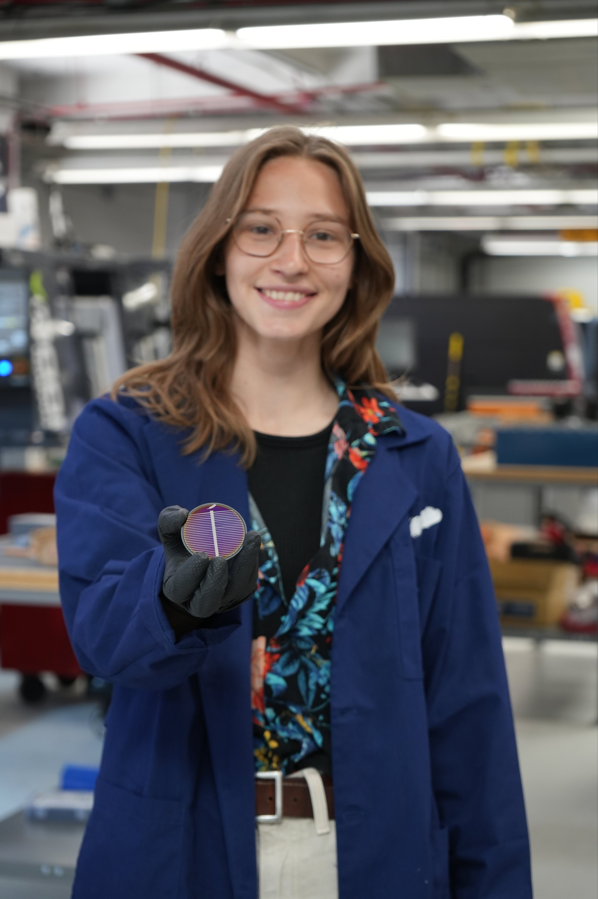
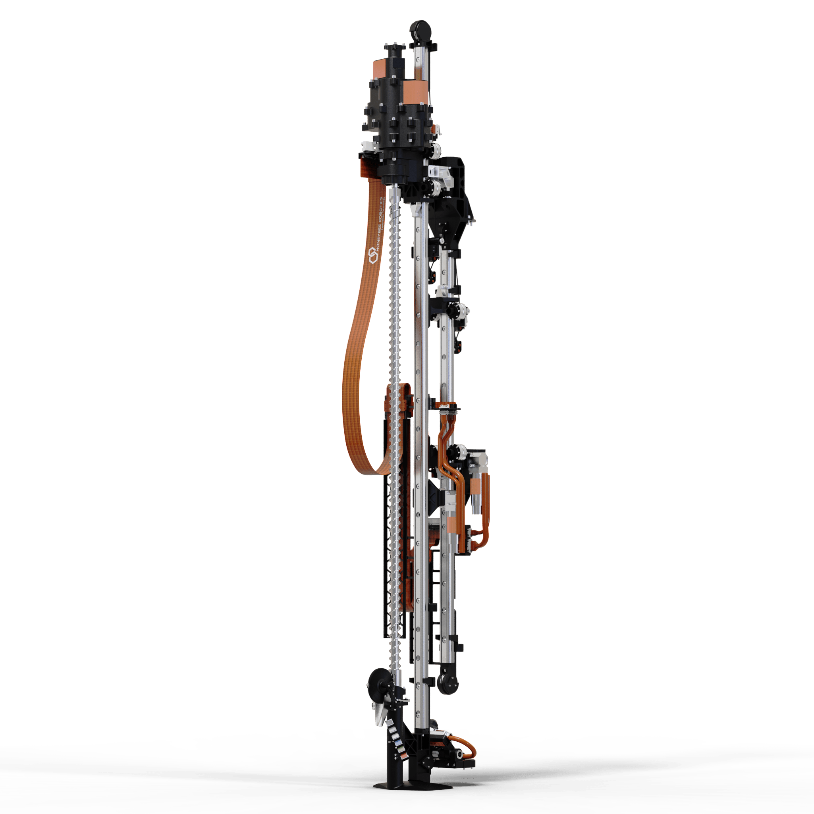
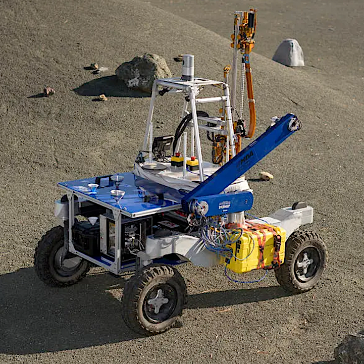
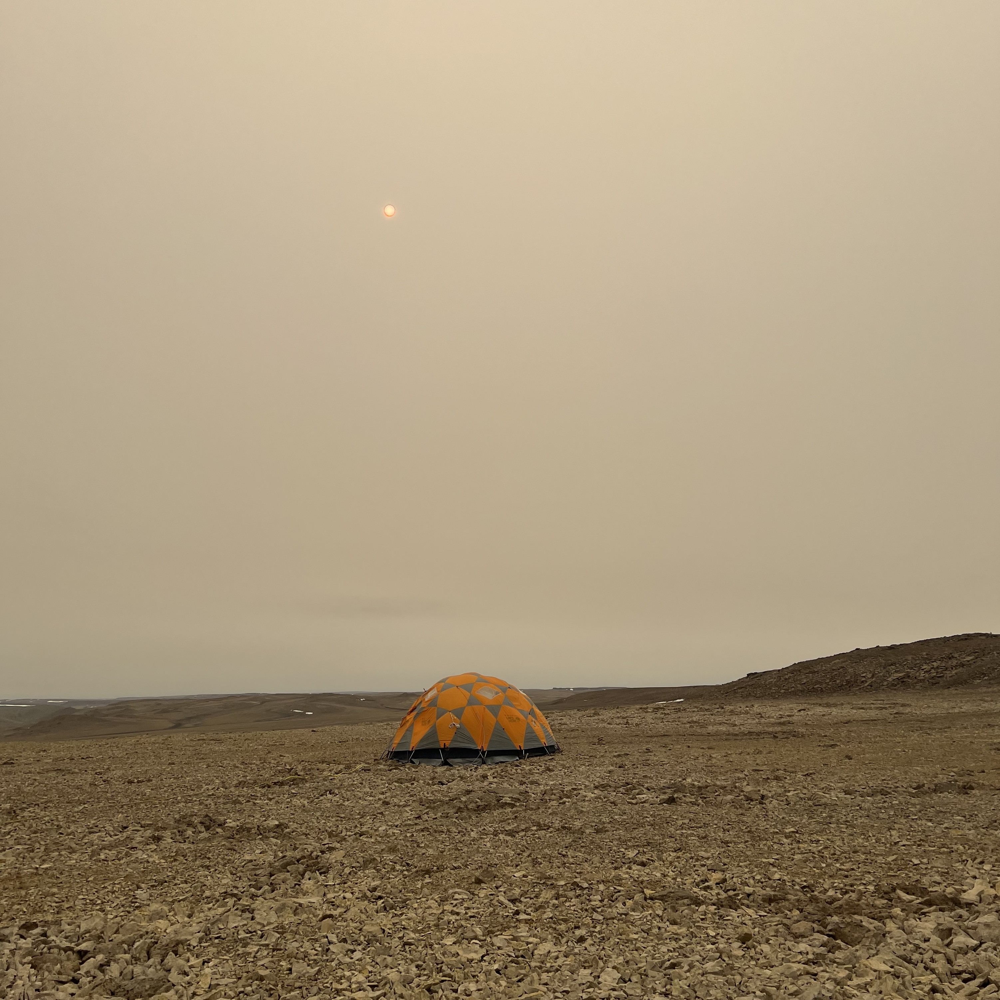
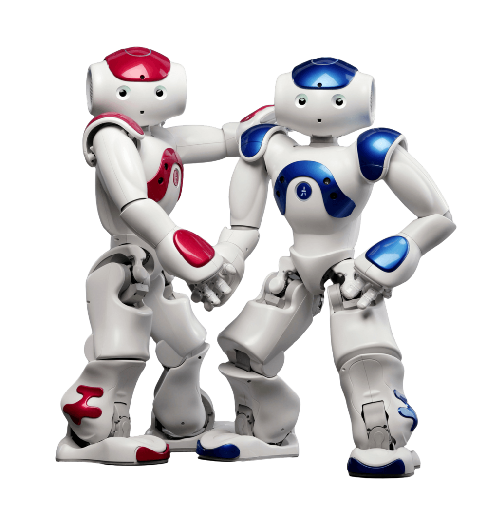
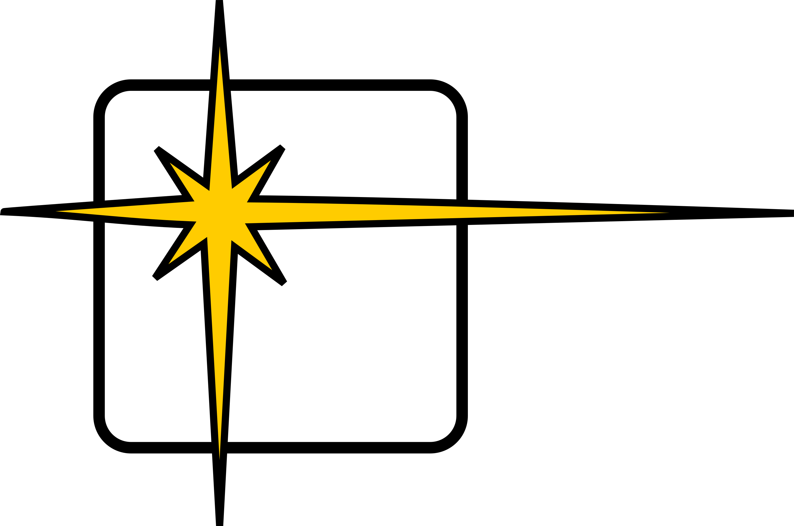
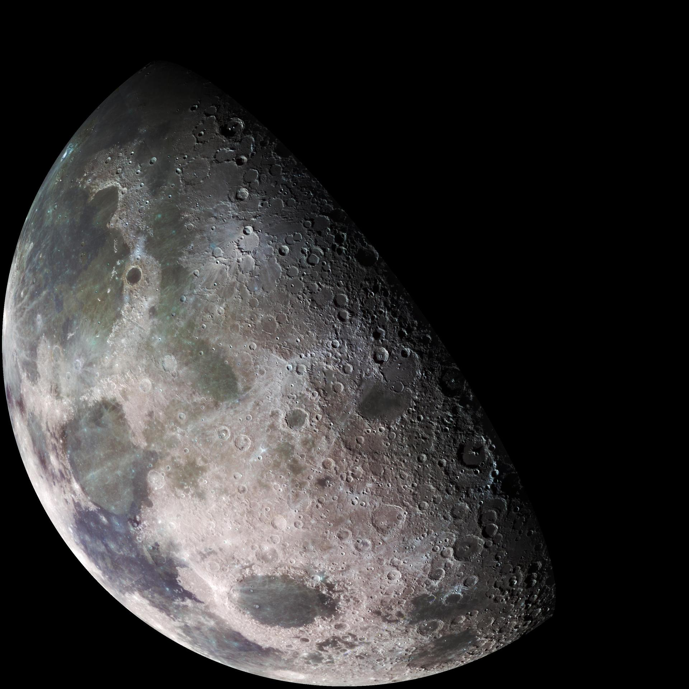
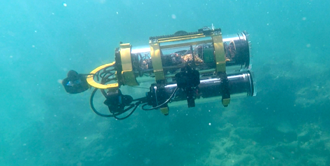
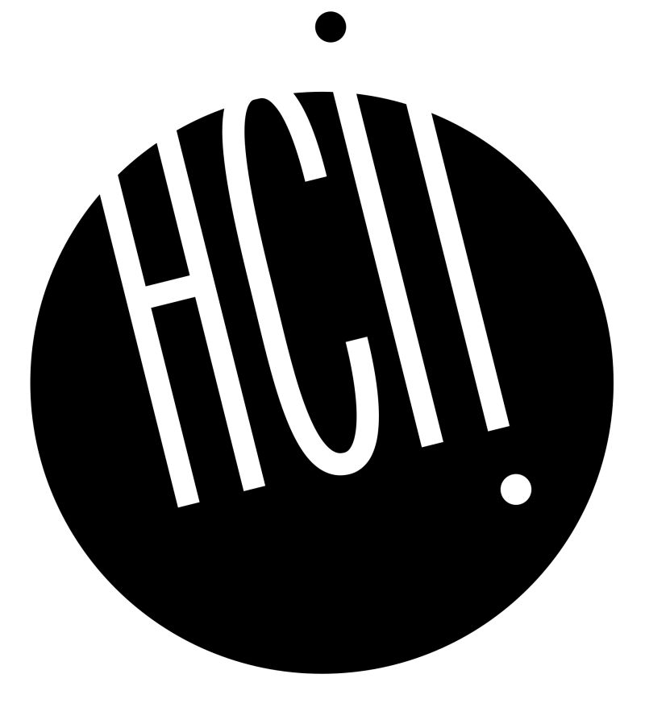

|
Elsa Forberger
PhD student, LASER Lab
Department of Astronautical Engineering
University of Southern California
My goal is to support large-scale long-term In-Situ Resource Utilization (ISRU) operations by ensuring robotic teams can adapt to the wear and tear caused by harsh extraterrestrial enviroments. To do so, my research centers around robust and adaptive control methods that can be used to identify and account for changes in capability. I am also interested in ways to incorperate knowledge of robot capabilities into high level task selection and planning.
Previously, I was the lead software engineer for an ISRU project at Blue Origin, and supported the development of technologies that turned lunar regolith into solar panels and oxygen. My work involved everything from robotics and controls to sensor calibration and testing.
Before joining Blue Origin, I did my B.S. in Computer Science (2018 - 2022) and M.S. in Robotics (2023-2024) at the University of Minnesota. During my M.S., I was advised by Professor Maria Gini in the Next Generation Robotics Lab. There, I worked on vibration-based fault detection for NASA's TRIDENT lunar drill. Additionally, I spent some time in the Interactive Robotics and Vision Lab working on dynamic gesture recognition for AUVs under Professor Junaed Sattar.
Orchid /
LinkedIn /
Resume
|

|
Publications and Presentations
|

|
Fast Vibration-Based Autonomous Fault Detection for Extraterrestrial Drills
E. Forberger, S. Boelter, B. Glass, M. Gini
RSS Workshop on Resource Constrained Systems, 2025
|
|

|
A Concept for Planetary Drilling Autonomy
S. Boelter, E. Temesgen, G. Brown, E. Forberger, B. Glass, M. Gini
2025 ICRA Workshop on Field Robotics, 2025
|
|

|
Abstract: Autonomy and Arctic Analog Testing for Planetary Drills
S. Boelter, E. Forberger, L. Weber, B. Glass, M. Gini
4th Ice Core Community Meeting (ICECOMM), 2025
|
|

|
Social Robots in Service Contexts: Exploring the Rewards and Risks of Personalization and Re-embodiment
S. Reig, M. Luria, E. Forberger, I. Won, A. Steinfeld, J. Forlizzi, J. Zimmerman
ACM Conference on Designing Interactive Systems, 2021
|
|

|
LASER Lab, University of Southern California
Lab Member, 2026-Present
|
|
|
Blue Origin
Software Engineer, 2025-2026
Space Resources Program, Blue Alchemist Project
|
|
|
Next Generation Robotics Laboratory, University of Minnesota
Graduate Researcher, 2024-2025
Under Professor Maria Gini
|
|

|
ASTER Labs
Research Scientist, 2022-2023
|
|

|
Interactive Robotics and Vision Lab, University of Minnesota
Undergraduate Researcher, 2020-2022 & Graduate Researcher, 2023
Under Professor Junaed Sattar
|
|

|
Human Computer Interaction Institute, Carnege Mellon University
Undergraduate Researcher through NSF REU Program, 2020
Under Professor John Zimmerman
|
Feel free to steal this website's source code. (As I did) Do not scrape the HTML from this page itself, as it includes analytics tags that you do not want on your own website — use the github code instead. Also, consider using Leonid Keselman's Jekyll fork of this page.
|
|
{kind=link}